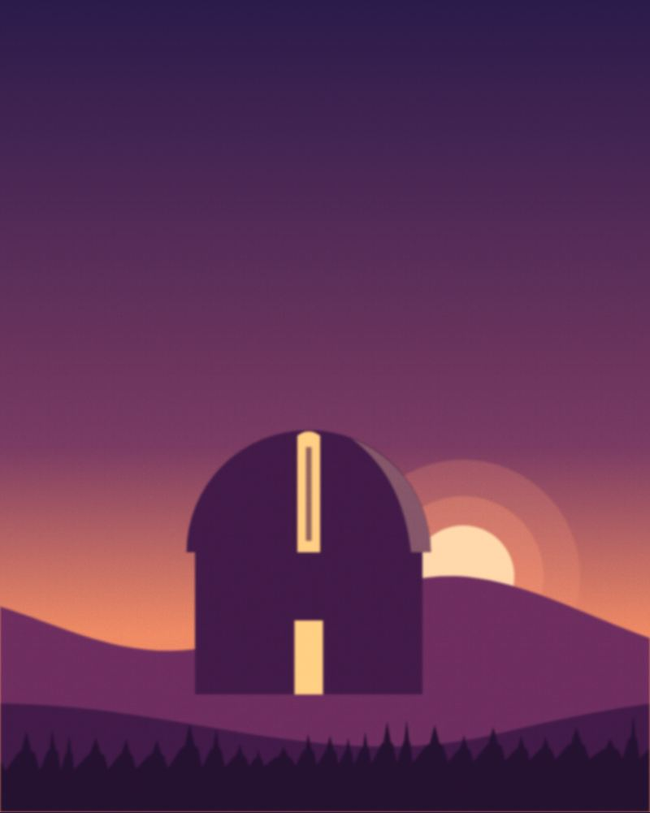

The dark is the main attraction
A small public observatory on Coldside Moor, eleven kilometres from the nearest street light. Friday and Saturday nights through the winter, we open the dome and point the half-metre telescope wherever the sky is best.
Status Open-dome nights every Friday and Saturday until March, from 21:30. We decide at 16:00 whether the sky allows.
What a night holds
Every visit starts in the warm room and ends under the dome. Choose the length of night that suits you.
-
90minutes
Open-dome night
A short talk on what is up tonight, then the telescope: a planet, a cluster and a galaxy, as the sky allows.
£14under-16s £8 -
3hours
Long night for photographers
Bring your own camera and tripod; we bring the dark, a guide to the moor's best foregrounds and a flask of something hot.
£3812 places -
45minutes
Sun through the scope
Safe, filtered views of sunspots and flares on winter afternoons, for schools and anyone who cannot stay up late.
£6schools free

Stand-in photoA warm room, then the cold dome
The night starts by the stove in the old shepherd's bothy, where your eyes have twenty minutes to adjust while we show you tonight's sky on paper.
Then up the iron stair. The dome is unheated on purpose: warm air shimmers and spoils the view, so we lend coats and keep the cocoa coming.
- Red lights only after 21:00
- Step-free warm room; the dome has twelve steps
- Coats, blankets and gloves to borrow
How the evening runs
16:00, the decision
We look at the cloud and email everyone booked. No email means the dome opens.
21:15, arrive
Park by the gate and dip your headlights past the cattle grid.
21:30, the warm room
Twenty minutes of tonight's sky, while your eyes get used to the dark.
22:00, the dome
Three objects through the telescope, chosen on the night.
If the sky closes over, your ticket moves to any night you like. We would rather lose a booking than show you a cloud.
Ruth Alder, warden since 2011
Why here
- Sky brightness on a moonless night, among the darkest in England
- 21.6mag per arcsec²
- To the nearest street light
- 11km
- Height of the dome above the sea
- 312m
- Clear nights we opened last winter
- 41of 52
The telescope
- Mirror
- 0.5 m, made in Bromley in 1974
- Mount
- Fork mount, driven at the speed of the sky
- Dome
- 5.2 m across, turned by hand
- Seats
- 16 in the warm room, 8 under the dome at a time
- Eyepiece height
- Steps and a stool for any height, from age 8
- Light
- Red only, after 21:00
Open-dome nights this winter
Doors at 21:15. Past nights drop off the list on their own.
- Friday27November21:304 places left
- Saturday28November21:30Sold out
- Friday4December21:30Places
- Saturday5December21:302 places left
- Friday11December21:30Places
- Saturday12DecemberClosedPrivate booking
- Friday27November21:304 places left
- Friday4December21:30Places
- Friday11December21:30Places
Who keeps the lights off
Ruth Alder
Warden
Rebuilt the mount by hand in 2012 and still knows every bolt by its sound.
Tomasz Olek
Night guide
Finds Andromeda for you in under a minute and explains it in under two.
Bea Hindmarsh
Warm room and cocoa
Keeps the stove lit and the first-timers laughing while their eyes adjust.
Before you come
What first-time visitors ask us most.
What happens if it is cloudy?
We decide at 16:00 and email you. Your ticket moves to any other night this season, or we refund it.
How cold is it under the dome?
As cold as outside, often below zero in January. Dress for a winter walk; we lend coats and gloves.
Is there anywhere to stay nearby?
The Black Bull at Coldside has six rooms and leaves a lamp on for stargazers until 01:00.
Next open night
Fri 4 Dec
Doors 21:15 · dome 22:00
Places
Book a night
Tell us which night and how many. We confirm by email within a day.
Finding us in the dark
Coldside Moor, near Bellingham
Northumberland NE48 9ZZ
- By car
- 25 minutes from Hexham. Dip your headlights after the cattle grid; parking for 14 cars by the gate.
- By bus
- The 880 to Coldside, then a 30-minute walk up the lane. The last bus back leaves at 22:40, so we run a lift for bus visitors.
- On foot
- Bring a torch with a red filter. The lane is unlit and the last half kilometre is gravel.
Alternative first screens: each replaces the scene and holds the page's h1 (h2 here, to keep one h1).
Hollow Fell Observatory, open-dome nights
Next night
Friday21:30
Every Friday and Saturday until March. We decide at 16:00 whether the sky allows, and email everyone booked.
- Friday 27 November4 left
- Saturday 28 NovemberSold out
- Friday 4 DecemberPlaces
- Saturday 5 December2 left
- Friday 11 DecemberPlaces
Come and see the dark
The winter season at Hollow Fell: forty nights under the darkest sky in England, with a telescope, a stove and someone who knows the way.
Page not found
You have walked off the map
This page is not here, but the lamps are still lit back at the start.
Elements
Every control in its states. Focus is shown here with the class is-focus; real focus looks the same.
Buttons
Status, tags, notices
Full moon on 24 DecemberThe sky is bright that week: fine for the Moon itself, poor for galaxies.
Ice on the laneFrom December, drive the last kilometre at walking pace.
Text fields
As it should appear on the list at the gate.
Add the end of the address, such as .co.uk
Only used if the lane is closed.
Date, select, message
Fridays and Saturdays only.
Choose a group size.
Wheelchair, birthdays, a proposal under the stars.
Checkbox and radio
Quantity stepper
Up to 6 with each adult ticket.
Disclosure
What should I bring?
Warm boots, a hat and patience. Leave your phone in the car or turn it to red.
Is there a café?
Cocoa, tea and flapjack in the warm room, by donation.
Table with figures, and a view switch
| Ticket | Length | Price |
|---|---|---|
| Adult | 90 min | £14.00 |
| Under 16 | 90 min | £8.00 |
| Family of four | 90 min | £36.00 |
| Photographers' long night | 3 h | £38.00 |
| Ticket | Length | Price |
|---|---|---|
| Anyone | 45 min | £6.00 |
| School class | 60 min | Free |